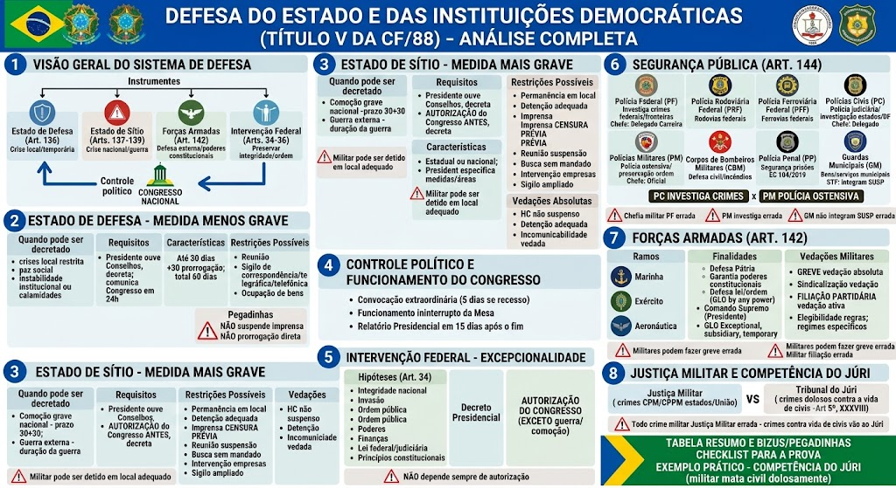

Conceito e Instrumentos de Defesa
Conceito e Instrumentos de Defesa
O Estado brasileiro possui mecanismos constitucionais para se defender contra ameaças à ordem constitucional e às instituições democráticas.
Instrumentos de Defesa (Título V da CF):
- Estado de Defesa (Art. 136) – crise local e temporária.
- Estado de Sítio (Arts. 137-139) – crise nacional ou guerra.
- Forças Armadas (Art. 142) – defesa externa e garantia dos poderes constitucionais.
- Intervenção Federal (Arts. 34-36) – para preservar a integridade nacional ou garantir a ordem.
Controle político: O Congresso Nacional exerce fiscalização durante os estados de exceção (Arts. 140-141).
Conceito e Requisitos
Conceito e Requisitos
Estado de Defesa: medida menos grave que o Estado de Sítio. Decretado pelo Presidente da República após ouvir o Conselho da República e o Conselho de Defesa Nacional.
Quando pode ser decretado:
- Para preservar ou restabelecer, em local restrito e determinado:
- A ordem pública;
- A paz social;
- Ameaçadas por grave e iminente instabilidade institucional;
- Ou atingidas por calamidades naturais.
Características:
- Vigência: até 30 dias, prorrogável uma única vez por igual período (até 60 dias no total).
- Comunicação imediata ao Congresso Nacional em até 24 horas após a decretação.
- O Congresso deve se reunir em até 5 dias para apreciar o decreto (se estiver em recesso, é convocado extraordinariamente).
Restrições Possíveis no Estado de Defesa
Restrições Possíveis no Estado de Defesa
Durante o Estado de Defesa, o Presidente pode determinar:
- Restrição a direitos de reunião (proibir ou limitar assembleias).
- Restrição ao sigilo de correspondência (interceptação postal).
- Restrição ao sigilo de comunicação telegráfica e telefônica (interceptação telefônica).
- Ocupação e uso temporário de bens (requisição de imóveis, veículos, etc.).
⚠️ Pegadinha: A banca diz que o Estado de Defesa permite a suspensão da liberdade de imprensa – ERRADO. Essa restrição só é possível no Estado de Sítio.
⚠️ Pegadinha: A banca diz que o Estado de Defesa pode ser decretado por 60 dias diretamente – ERRADO. São 30+30, com prorrogação.
Conceito e Requisitos
Estado de Sítio: medida mais grave que o Estado de Defesa. Decretado pelo Presidente da República com autorização do Congresso Nacional.
Quando pode ser decretado:
- Comoção grave de repercussão nacional (ex: revoltas generalizadas) – prazo máximo: 30 dias, prorrogável por igual período.
- Guerra externa (ou sua iminência) (ex: invasão estrangeira) – vigência por todo o período da guerra, sem prazo fixo.
Características:
- Pode ser estadual ou nacional.
- Exige autorização do Congresso Nacional (diferente do Estado de Defesa, que não exige – apenas comunicação).
- O Congresso deve ser convocado em até 5 dias se estiver em recesso.
- Após a decretação, o Presidente especifica as medidas e as áreas abrangidas.
Restrições Possíveis no Estado de Sítio
Restrições Possíveis no Estado de Sítio
Além das restrições do Estado de Defesa, o Estado de Sítio permite:
- Obrigação de permanência em local designado (recolhimento domiciliar).
- Detenção em edifício não destinado a acusados por crimes comuns (locais específicos).
- Restrição à liberdade de imprensa (censura prévia).
- Suspensão da liberdade de reunião (proibição de assembleias).
- Busca e apreensão domiciliar sem mandado.
- Intervenção em empresas e serviços públicos (requisição).
- Restrição ao sigilo de correspondência, telefone e telegrafia (ampliada).
Vedações Durante o Estado de Sítio — Art. 139
Vedações Durante o Estado de Sítio — Art. 139
Art. 139: 'Durante o estado de sítio, não se suspende a apresentação de habeas corpus; a autoridade só pode deter pessoas em locais não destinados a presos comuns; é vedada a incomunicabilidade do preso.'
Vedações absolutas:
- Não se suspende o habeas corpus (Art. 139, I).
- A detenção só pode ocorrer em locais adequados (não em presídios comuns, salvo exceção) – Art. 139, II.
- É vedada a incomunicabilidade do preso (Art. 139, III).
⚠️ Pegadinha: A banca diz que no Estado de Sítio pode haver incomunicabilidade do preso – ERRADO, é vedado constitucionalmente.
Funcionamento do Congresso nos Estados de Exceção
Funcionamento do Congresso nos Estados de Exceção
Convocação extraordinária (Art. 136, §2º):
- Se o Congresso Nacional estiver em recesso, será convocado extraordinariamente em até 5 dias para apreciar o Estado de Defesa ou o Estado de Sítio.
Funcionamento ininterrupto (Art. 140):
- A Mesa do Congresso Nacional continuará em funcionamento ininterrupto durante a vigência do Estado de Defesa ou de Sítio para acompanhar e fiscalizar a aplicação das medidas (controle político).
Relatório após o fim (Art. 141):
- O Presidente da República apresentará ao Congresso relatório detalhado sobre as medidas tomadas, com exposição e justificação dos atos, no prazo de 15 dias após o término do estado de exceção.
Conceito e Requisitos
Intervenção Federal: medida excepcional em que a União intervém nos Estados ou no DF para preservar a integridade nacional ou garantir a ordem constitucional.
Hipóteses (Art. 34):
- Manter a integridade nacional.
- Repelir invasão estrangeira ou de uma unidade da Federação em outra.
- Pôr termo a grave comprometimento da ordem pública.
- Garantir o livre exercício de qualquer dos Poderes nas unidades da Federação.
- Reorganizar as finanças da unidade que suspender o pagamento da dívida fundada por mais de dois anos (salvo motivo de força maior).
- Prover a execução de lei federal, ordem ou decisão judicial.
- Assegurar a observância dos princípios constitucionais (ex: autonomia municipal, prestação de contas, etc.).
Decreto de intervenção:
- Expedido pelo Presidente da República.
- Depende de autorização do Congresso Nacional (exceto se houver guerra ou comoção grave, quando a intervenção pode ser decretada de ofício, sem autorização).
- Deve especificar a amplitude, o prazo e as condições de execução.
⚠️ Pegadinha: A banca diz que a intervenção federal sempre depende de autorização do Congresso – ERRADO. Em caso de guerra ou comoção grave, pode ser decretada de ofício.
Conceito e Órgãos de Segurança Pública
Conceito e Órgãos de Segurança Pública
Segurança Pública: dever do Estado, direito e responsabilidade de todos. Exercida para a preservação da ordem pública e da incolumidade das pessoas e do patrimônio.
Órgãos de Segurança Pública (Art. 144):
- Polícia Federal – investigar crimes federais, controlar fronteira, polícia marítima e aeroportuária.
- Polícia Rodoviária Federal – patrulhamento das rodovias federais.
- Polícia Ferroviária Federal – patrulhamento do sistema ferroviário federal.
- Polícias Civis – polícia judiciária dos Estados e DF.
- Polícias Militares – polícia ostensiva e preservação da ordem pública.
- Corpos de Bombeiros Militares – defesa civil, prevenção e combate a incêndios.
- Polícia Penal (EC 104/2019) – segurança dos estabelecimentos penais.
- Guardas Municipais – proteção de bens, serviços e instalações municipais.
🧠 Mnemônico: 'PF-PRF-PFF-PC-PM-CBM-PP-GM' – a ordem do Art. 144.
Polícia Federal — Destaques
Polícia Federal — Destaques
Polícia Federal (Art. 144, §1º):
- Chefiada por Delegado de Polícia de Carreira.
- Função de polícia judiciária da União.
- Investiga crimes de competência da Justiça Federal.
- Compete: apurar infrações penais contra a ordem política, social ou patrimônio da União, além de crimes interestaduais ou internacionais.
⚠️ Pegadinha: A banca diz que a Polícia Federal é chefiada por um militar. ERRADO. A chefia é de Delegado de Polícia de Carreira.
Polícia Civil x Polícia Militar — Diferenças
Polícia Civil x Polícia Militar — Diferenças
| Polícia CIVIL | Polícia MILITAR |
|---|---|
| Função: polícia judiciária | Função: polícia ostensiva |
| Investiga crimes | Patrulha as ruas |
| Inquérito policial | Prevenção e repressão |
| Chefia: Delegado | Chefia: Oficial |
| Força auxiliar do Ministério Público | Força auxiliar do Exército |
⚠️ Pegadinha: A banca diz que a Polícia Militar investiga crimes. ERRADO. Ela faz polícia ostensiva (patrulhamento), não investigação. A investigação é da Polícia Civil.
Polícia Penal e Guardas Municipais — Atualizações
Polícia Penal e Guardas Municipais — Atualizações
Polícia Penal (EC 104/2019 – Art. 144, §5º-A):
- Responsável pela segurança dos estabelecimentos penais (presídios).
- Vinculação: a Polícia Penal Federal é vinculada ao órgão administrador do sistema penal da União; as estaduais/distrital, ao órgão do respectivo ente.
- Os policiais penais são integrantes do sistema de segurança pública.
Guardas Municipais (Art. 144, §8º):
- Destinadas à proteção de bens, serviços e instalações dos Municípios.
- STF (ADPF 995): as Guardas Municipais integram o Sistema Único de Segurança Pública (SUSP) e podem exercer poder de polícia, inclusive com porte de arma, desde que capacitadas e com regulamentação específica.
- Não podem, contudo, investigar crimes (função típica da Polícia Civil).
Agentes de trânsito:
- Não estão listados no Art. 144, mas exercem atividade de segurança pública (art. 23, V e Lei 9.503/97 – CTB).
⚠️ Pegadinha: A banca diz que as Guardas Municipais não integram o sistema de segurança pública – ERRADO (integram o SUSP, segundo o STF).
Conceito e Ramos das Forças Armadas
Conceito e Ramos das Forças Armadas
Forças Armadas: instituições nacionais permanentes e regulares, organizadas com base na hierarquia e disciplina.
Ramos das Forças Armadas:
- Marinha – defesa do território marítimo e fluvial.
- Exército – defesa do território terrestre.
- Aeronáutica – defesa do espaço aéreo.
Finalidades (Art. 142, caput):
- Defesa da Pátria.
- Garantia dos poderes constitucionais.
- Defesa da lei e da ordem (por iniciativa de qualquer dos Poderes).
📖 Para Leigos: As Forças Armadas são como o \"exército\" do país, que protege o Brasil contra inimigos externos e, em situações extremas, pode ajudar a manter a ordem interna (GLO – Garantia da Lei e da Ordem).
Comando e Garantia da Lei e da Ordem (GLO)
Comando e Garantia da Lei e da Ordem (GLO)
Comando:
- O Presidente da República é o Comandante Supremo das Forças Armadas (Art. 84, XIII).
- Compete ao Presidente nomear o Comandante de cada ramo (Marinha, Exército, Aeronáutica).
Garantia da Lei e da Ordem (Art. 142, caput):
- As Forças Armadas podem atuar na garantia da lei e da ordem mediante:
- Iniciativa de qualquer dos Poderes (Legislativo, Executivo ou Judiciário).
- Regulamentação por lei complementar (Lei Complementar nº 97/1999, alterada pela LC 117/2004).
STF (ADPF 372): O STF entende que a atuação das Forças Armadas na GLO deve ser excepcional, subsidiária e temporária, respeitando os direitos fundamentais. A GLO não substitui a segurança pública regular.
⚠️ Pegadinha: A banca diz que as Forças Armadas só atuam na GLO por iniciativa do Executivo – ERRADO. Qualquer dos Poderes pode solicitar.
Vedações Constitucionais dos Militares — Art. 142, §3º
Vedações Constitucionais dos Militares — Art. 142, §3º
Art. 142, §3º: vedações aplicáveis aos militares:
- Proibição de greve – militar não pode fazer greve (vedação constitucional direta, inclusive para policiais militares).
- Proibição de sindicalização – militar não pode se sindicalizar.
- Proibição de filiação partidária – militar em serviço ativo não pode estar filiado a partidos políticos.
- Elegibilidade:
- Menos de 10 anos de serviço: deve afastar-se definitivamente para concorrer.
- Mais de 10 anos de serviço: se eleito, deve ser transferido para a reserva.
- Cargos públicos: pode ocupar cargo público civil (ex: ministro, secretário), mas com regime jurídico específico.
⚠️ Pegadinha: A banca diz que militar pode se filiar a partido político – ERRADO – é vedado a militar em serviço ativo.
⚠️ Pegadinha: A banca diz que militar pode fazer greve – ERRADO – vedação absoluta.
Prerrogativas e Justiça Militar
Prerrogativas e Justiça Militar
Prerrogativas dos Militares:
- Sujeitos a legislação específica (Código Penal Militar, Código Processual Penal Militar).
- Crimes militares julgados pela Justiça Militar.
Justiça Militar (Art. 125, §3º e Art. 142):
- A justiça militar compete processar e julgar os crimes militares definidos em lei.
- Justiça Militar da União: julga crimes militares das Forças Armadas.
- Justiça Militar Estadual: julga crimes militares das Polícias Militares e Corpos de Bombeiros.
Competência do Júri (Art. 5º, XXXVIII):
- O Júri julga crimes dolosos contra a vida de civis (homicídio, infanticídio, aborto, etc.), inclusive quando cometidos por militares contra civis.
- Se um militar matar um civil dolosamente, o crime será julgado pelo Tribunal do Júri, não pela Justiça Militar (competência constitucional).
⚠️ Pegadinha: A banca diz que todo crime cometido por militar é julgado pela Justiça Militar – ERRADO. Crimes contra a vida de civis são julgados pelo Júri.
🧠 MNEMÔNICOS GERAIS
🧠 MNEMÔNICOS GERAIS
- 'DEFESA' – Defesa (Forças Armadas), Estado de Defesa, Federal (Intervenção), Estado de Sítio, Segurança Pública, Art. 142.
- 'MEA' – Marinha, Exército, Aeronáutica.
- 'PF-PRF-PFF-PC-PM-CBM-PP-GM' – Polícia Federal, Rodoviária, Ferroviária, Civil, Militar, Corpo de Bombeiros, Polícia Penal, Guardas Municipais.
- Estado de Defesa: 30 dias + 30 (prorrogação), local restrito, comunicação ao Congresso em 24h.
- Estado de Sítio: 30+30 (comoção) ou duração da guerra (guerra), autorização do Congresso.
- Vedações no Estado de Sítio: HC não suspenso, locais adequados, incomunicabilidade vedada.
- Intervenção Federal: decreto presidencial, autorização do Congresso (exceto guerra/comoção).
- Forças Armadas: GLO – iniciativa de qualquer Poder, excepcional e subsidiária.
- Vedações militares: greve, sindicalização, filiação partidária; elegibilidade com regras.
⚠️ Pegadinhas Mais Cobradas (Atualizadas)
⚠️ Pegadinhas Mais Cobradas (Atualizadas)
❌ 'Estado de Defesa pode ser decretado por 60 dias diretamente.' → ERRADO (30 + 30).
❌ 'Estado de Sítio por guerra tem o mesmo prazo de 30+30 dias.' → ERRADO (dura enquanto durar a guerra).
❌ 'Estado de Sítio pode ser decretado sem autorização do Congresso.' → ERRADO (exige autorização).
❌ 'No Estado de Sítio pode haver incomunicabilidade do preso.' → ERRADO (vedada).
❌ 'O habeas corpus pode ser suspenso no Estado de Sítio.' → ERRADO (vedação constitucional).
❌ 'A intervenção federal sempre depende de autorização do Congresso.' → ERRADO (há exceção para guerra/comoção).
❌ 'As Forças Armadas só atuam na GLO por iniciativa do Executivo.' → ERRADO (qualquer Poder pode solicitar).
❌ 'Polícia Militar investiga crimes.' → ERRADO (investiga a Civil).
❌ 'Militar pode se filiar a partido político.' → ERRADO (vedado em serviço ativo).
❌ 'Todo crime de militar é julgado pela Justiça Militar.' → ERRADO (crimes contra a vida de civis vão ao Júri).
❌ 'Guardas Municipais não integram o sistema de segurança pública.' → ERRADO (integram o SUSP, segundo o STF).
✅ CHECKLIST PARA A PROVA
✅ CHECKLIST PARA A PROVA
✅ Estado de Defesa (Art. 136): crise local, 30+30 dias, comunicação ao Congresso em 24h, restrições específicas.
✅ Estado de Sítio (Art. 137-139): crise nacional (30+30) ou guerra (duração da guerra), autorização do Congresso.
✅ Vedações no Estado de Sítio: habeas corpus não é suspenso, detenção adequada, incomunicabilidade vedada.
✅ Controle político: Congresso convocado em 5 dias se em recesso; funciona ininterruptamente; relatório após o fim.
✅ Segurança Pública (Art. 144): PF, PRF, PFF, PC, PM, CBM, PP (EC 104/2019), GM (STF – SUSP).
✅ Forças Armadas (Art. 142): Marinha, Exército, Aeronáutica; GLO com iniciativa de qualquer Poder, excepcional e subsidiária.
✅ Vedações militares: greve, sindicalização, filiação partidária; elegibilidade com regras (10 anos).
✅ Competência do Júri: crimes dolosos contra a vida de civis, inclusive se praticados por militares.
✅ Intervenção Federal: decreto presidencial, autorização do Congresso (exceto guerra/comoção).
Exemplo Prático – Competência do Júri
Exemplo Prático – Competência do Júri
Um militar da ativa, durante uma discussão de trânsito, saca sua arma e mata um civil. Esse crime é doloso contra a vida de um civil. Apesar de o autor ser militar, a competência é do Tribunal do Júri (Art. 5º, XXXVIII). A Justiça Militar não julgará esse crime, pois a vítima é civil. Se a vítima fosse outro militar, aí sim a competência seria da Justiça Militar (crime militar próprio).
Mapa-mental
Material de estudo: Defesa do Estado e das Instituições Democráticas
Material complementar · Ver fonte no GitHub
Tabela Resumo e Pegadinhas Finais
Mapa-mental
